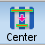
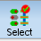
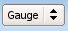

To access: activate a session in the Session Browser pane and click the Gauges tab.
The Gauge Analysis pane shares space with the Session Browser pane. During session setup, Gauge Analysis lets you select and configure gauges for the pxSMO portion of the run.
The Gauge Analysis pane controls which gauges are used for source optimization, and how they are weighted. The OPC and Verify stages always use all gauges. Each session may have a different combination of enabled gauges or weighting.
After a run has completed, the gauge table adds many columns allowing you a tabular view of per-gauge metrics such as MEEF and LDOF.
The fields at the top of each column can filter to show just the rows specified, or be used to sort the table according to the column value.
If the Gauge Analysis pane is empty when you re-open the RET Selection window, it means you do not have an active layout/gauge pair. Use the dropdown next to Active Layout/Gauge Pair at the top of the RET Selection window to access an existing setup. If the pane looks like Figure 1, there is no session currently active. Use the dropdown next to Active Session to set one.
Button |
Description |
|---|---|
Selected Session |
Displays metrics in the gauge table for the session selected in the Run Control/Layout Session View pane. This is the default display selection. |
Active Session |
Displays metrics in the gauge table for the activated session. |
Center  |
Corrects gauge placement errors by adjusting their length and centering the gauge along its length axis between the feature edges. |
Select  |
Gauge Selection Chooses a representative set of gauges from the gauge file. |
Clips |
Custom Clips/Gauges Opens the Clips and Gauges Editor for creating, editing, and managing the clips and gauges used by pxSMO and pxOPC. |
Gauge/SMO/OPC  |
Works with Highlight, Unhighlight, and Unhighlight All to display a gauge, SMO clip, or OPC clip in the Calibre WORKbench layout viewer. |
Req |
Crossprobes from the Layout Region takes a section highlighted in the Calibre WORKbench layout viewer and highlights the corresponding gauge in the Gauge pane. |
Field |
Description |
|---|---|
SMO Enable cPW |
Whether the gauge is used in optimizing the source (SMO Enable) and included in the calculation of the common process window (cPW). Gauges that contain outlier data should not be included in the cPW calculation. By default, a new session uses gauges selected in the Gauge Analysis pane for SMO. If you customize clips using the Clips and Gauges Editor, SMO ignores SMO Enable settings and applies the customized clips settings. |
Context |
A thumbnail image of the immediate area around the gauge. If you hover over it, additional information is displayed. The number indicates the number of edges the gauge intersects. Gauges with placement issues relative to the layout have red numbers. You may be able to fix these using the Center button. |
Struc |
A short description assigned to the gauge. |
GID |
Gauge ID. |
Weight |
How much the metrics from this particular gauge should be factored in relative to other gauges. The weight is used in all stages. If you change the weight while a session is executing, the change is picked up by the next tool run. |
CD Tol. |
CD tolerance for computing the process window. This can be specified in percentage, absolute nanometers, or a range. Each gauge can have a different setting. The default is 10%. |
Length |
How long the gauge is. Gauge length is important because a gauge that is too short may not be able to measure the edge placement error, but a gauge that is too long may detect unrelated edges. |
Loc |
Gauge type. 0 indicates the gauge is measuring critical distance (CD) across the inside of a polygon. 1 indicates the gauge is measuring space between polygons. If the gauge is placed poorly in the layout based on its type, you must fix the layout or edit the gauge file and create a new layout/gauge pair. |
Drawn |
The measurement (width or space) of the target layer in nanometers. |
Meas |
The CD measurement of the resist in nanometers. |
Sim |
The measurement of the simulated image. |
Right-click on the column headings to open the Column Manager. The Column Manager lets you customize what columns are displayed. Some columns are only displayed in rare cases, such as ErrorInfo.
Right-click on the text portion of a gauge row to quickly access common actions such as highlight.
The empty fields under the column headings can be used to filter gauges. Type a constraint in the field and press Enter. (For example, entering “<68” in the Drawn column of Figure 2 hides gauges 6 and 7.)
Filters are additive. To remove a filter, click Pop Filter in the toolbar.
Config opens the Gauge Table Configuration dialog box. These settings control the size of the Context thumbnail’s larger view.
After pxSMO and OPC complete, the Gauges dropdown also offers SMO and OPC. When you highlight a gauge in the layout, Gauges highlights only the gauge; SMO highlights the clip used for SMO; and OPC highlights the OPC clip.